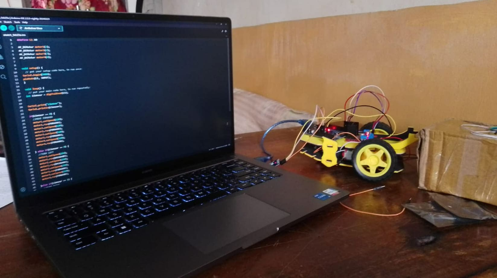

My First Engineering Log
This was my very first project. Coming from a Bio-Maths background, I knew nothing about programming. My teammate Shahazad handed me the Arduino and sensors and said, "Don't worry, you can do it."
Driven by ego and curiosity, I sat down and determined the logic myself. The concept is pure physics: compare light intensity across three resistors and steer the motors toward the brightest value.

The Result
When I uploaded the code and the wheels finally turned to follow my flashlight, it wasn't just a working robot—it was the moment I became an engineer. It proved that skills can be built from zero if the will is there.